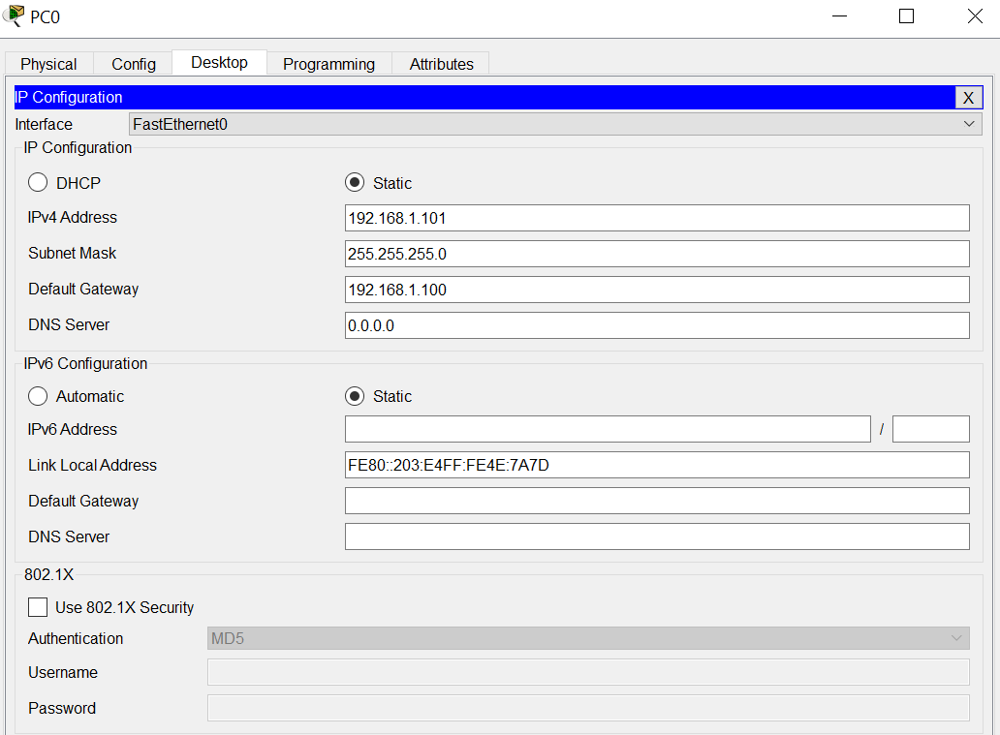
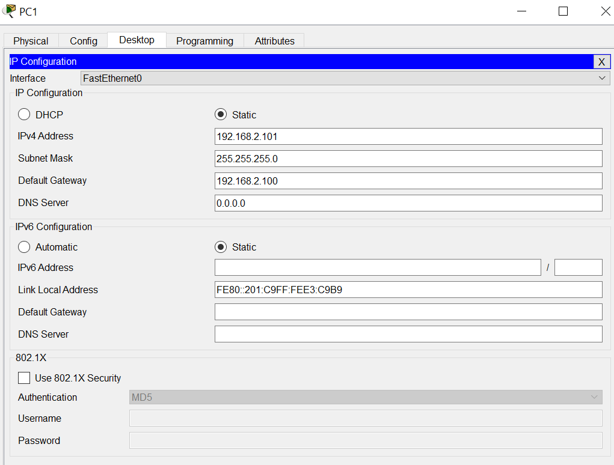
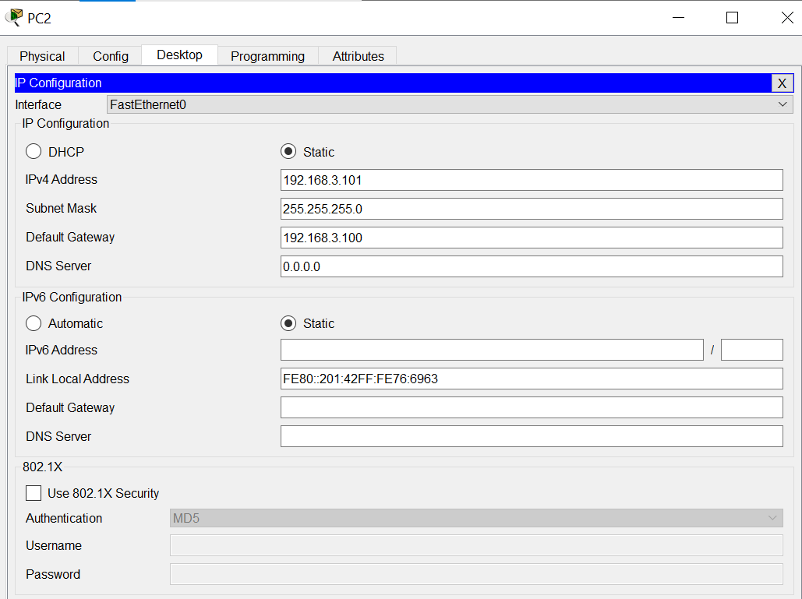

Lab 2
Lab No :02 (Static Routing)

Router0:
Router(config)#ip route 11.0.0.0 255.0.0.0 10.0.0.2
Router(config)#ip route 192.168.3.0 255.255.255.0 10.0.0.2
Router(config)#ip route 192.168.2.0 255.255.255.0 10.0.0.2
Router1:
Router(config)#ip route 192.168.1.0 255.255.255.0 10.0.0.1
Router(config)#ip route 192.168.3.0 255.255.255.0 11.0.0.2
Router2:
Router(config)#ip route 192.168.1.0 255.255.255.0 11.0.0.1
Router(config)#ip route 192.168.2.0 255.255.255.0 11.0.0.1
Router(config)#ip route 10.0.0.0 255.0.0.0 11.0.0.1
Route Config Check:
Router0:
Router#show ip route
Codes: L - local, C - connected, S - static, R - RIP, M - mobile, B - BGP
D - EIGRP, EX - EIGRP external, O - OSPF, IA - OSPF inter area
N1 - OSPF NSSA external type 1, N2 - OSPF NSSA external type 2
E1 - OSPF external type 1, E2 - OSPF external type 2, E - EGP
i - IS-IS, L1 - IS-IS level-1, L2 - IS-IS level-2, ia - IS-IS inter area
* - candidate default, U - per-user static route, o - ODR
P - periodic downloaded static route
Gateway of last resort is not set
10.0.0.0/8 is variably subnetted, 2 subnets, 2 masks
C 10.0.0.0/8 is directly connected, Serial0/0/0
L 10.0.0.1/32 is directly connected, Serial0/0/0
S 11.0.0.0/8 [1/0] via 10.0.0.2
192.168.1.0/24 is variably subnetted, 2 subnets, 2 masks
C 192.168.1.0/24 is directly connected, FastEthernet0/0
L 192.168.1.100/32 is directly connected, FastEthernet0/0
S 192.168.2.0/24 [1/0] via 10.0.0.2
S 192.168.3.0/24 [1/0] via 10.0.0.2
Router1:
Router#show ip route
Codes: L - local, C - connected, S - static, R - RIP, M - mobile, B - BGP
D - EIGRP, EX - EIGRP external, O - OSPF, IA - OSPF inter area
N1 - OSPF NSSA external type 1, N2 - OSPF NSSA external type 2
E1 - OSPF external type 1, E2 - OSPF external type 2, E - EGP
i - IS-IS, L1 - IS-IS level-1, L2 - IS-IS level-2, ia - IS-IS inter area
* - candidate default, U - per-user static route, o - ODR
P - periodic downloaded static route
Gateway of last resort is not set
10.0.0.0/8 is variably subnetted, 2 subnets, 2 masks
C 10.0.0.0/8 is directly connected, Serial0/0/0
L 10.0.0.2/32 is directly connected, Serial0/0/0
11.0.0.0/8 is variably subnetted, 2 subnets, 2 masks
C 11.0.0.0/8 is directly connected, Serial0/0/1
L 11.0.0.1/32 is directly connected, Serial0/0/1
S 192.168.1.0/24 [1/0] via 10.0.0.1
192.168.2.0/24 is variably subnetted, 2 subnets, 2 masks
C 192.168.2.0/24 is directly connected, FastEthernet0/0
L 192.168.2.100/32 is directly connected, FastEthernet0/0
S 192.168.3.0/24 [1/0] via 11.0.0.2
Router2:
Router#show ip route
Codes: L - local, C - connected, S - static, R - RIP, M - mobile, B - BGP
D - EIGRP, EX - EIGRP external, O - OSPF, IA - OSPF inter area
N1 - OSPF NSSA external type 1, N2 - OSPF NSSA external type 2
E1 - OSPF external type 1, E2 - OSPF external type 2, E - EGP
i - IS-IS, L1 - IS-IS level-1, L2 - IS-IS level-2, ia - IS-IS inter area
* - candidate default, U - per-user static route, o - ODR
P - periodic downloaded static route
Gateway of last resort is not set
S 10.0.0.0/8 [1/0] via 11.0.0.1
11.0.0.0/8 is variably subnetted, 2 subnets, 2 masks
C 11.0.0.0/8 is directly connected, Serial0/0/0
L 11.0.0.2/32 is directly connected, Serial0/0/0
S 192.168.1.0/24 [1/0] via 11.0.0.1
S 192.168.2.0/24 [1/0] via 11.0.0.1
192.168.3.0/24 is variably subnetted, 2 subnets, 2 masks
C 192.168.3.0/24 is directly connected, FastEthernet0/0
L 192.168.3.100/32 is directly connected, FastEthernet0/0
Ip assigning to the PCs:



Check Connectivity by Ping Command:
Cisco Packet Tracer PC Command Line 1.0
C:\>ping 192.168.3.101
Pinging 192.168.3.101 with 32 bytes of data:
Reply from 192.168.3.101: bytes=32 time=28ms TTL=125
Reply from 192.168.3.101: bytes=32 time=2ms TTL=125
Reply from 192.168.3.101: bytes=32 time=26ms TTL=125
Reply from 192.168.3.101: bytes=32 time=3ms TTL=125
Ping statistics for 192.168.3.101:
Packets: Sent = 4, Received = 4, Lost = 0 (0% loss),
Approximate round trip times in milli-seconds:
Minimum = 2ms, Maximum = 28ms, Average = 14ms